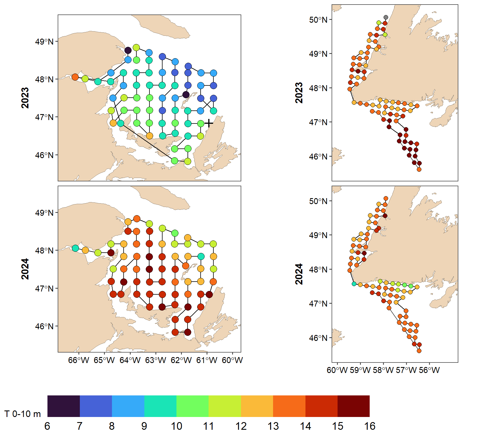

##### my packages ################################################################################
## CRAN
cran.packages <- c('tidyverse','boot','magrittr','ggpmisc','ggpubr','ggthemes','mgcv',
'fields', 'inlabru', 'sf', 'PresenceAbsence', 'verification', 'raster',
'scales', 'nlme','nls.multstart', 'stringr', 'ggforce',"readxl", "marmap")
install.this <- cran.packages[!(cran.packages %in% utils::installed.packages()[,"Package"])]
if(length(install.this)>=1) install.packages(install.this)
dummy <- lapply(cran.packages, require, character.only = TRUE)
## github
git.packages <- c('catchR','DFOdata','CCAM', 'INLA')
install.this <- git.packages[!(git.packages %in% utils::installed.packages()[,"Package"])]
if('catchR' %in% install.this) devtools::install_github("iml-assess/catchR@eli_parallel")
if('DFOdata' %in% install.this) devtools::install_github("iml-assess/DFOdata")
if('CCAM' %in% install.this) devtools::install_github("elisvb/CCAM")
if('INLA' %in% install.this)install.packages("INLA",repos=c(getOption("repos"),INLA="https://inla.r-inla-download.org/R/stable"), dep=TRUE)
dummy <- lapply(git.packages, require, character.only = TRUE)
##### source R directory ############################################################################
#invisible(sapply(list.files(pattern="[.]R$", path="R/", full.names=TRUE), source))
##### my ggplot theme ################################################################################
theme_set(theme_mackerel()) # theme_mackerel from catchR
update_geom_defaults("line", list(size = 1)) # no idea why somethimes I get fat lines otherwise
##### passwords databases #############################################################################
source("../../bdOracle.R")
source(paste0("utils/basemap.R")) #if error "plot new has not been call", restart R, package compatibility issues
source(paste0("utils/mackerel_fun_incubation.R")) # Mackerel incubation .
source(paste0("utils/spatial_projections.R"))#
source(paste0("utils/extract_biochem.R"))
source(paste0("utils/extract_T0_10.R"))
source(paste0("INLA/Mesh.R"))
source(paste0("INLA/INLA_ZAG_covar_Stations.R"))
source(paste0("INLA/INLA_ZAG_covar_Stations_CV.R"))
source(paste0("utils/nlme_boot.R"))
source(paste0("INLA/INLA_tw_covar_Stations.R"))
source(paste0("INLA/INLA_tw_covar_Stations_CV.R"))
source(paste0('INLA/plotSpatialFieldCL.R'))
source(paste0('INLA/plotSmoother.R'))
source(paste0('INLA/model_validation.R'))
source(paste0('INLA/get_prediction_grid.R'))
source(paste0('../biochem/PL_Get_SampleID_Batch.R'))
source(paste0('../biochem/PL_Get_Counts_Batch.R'))
source(paste0('../biochem/PL_Read_Filter.R'))
source(paste0('../biochem/PL_Taxonomic_Grouping.R'))
log10p1_trans = function() scales::trans_new("log10p1", transform=function(x) log10(x+1), inverse=function(x) (10^x)-1)#inverse function is necessary for legend
#source(paste0("R/",year_to_report,"/INLA/getvar.R")) # needs to be retought#extract_biochem(year=my.year, path_to_file = NULL, sql="BOCHEM_Bongo_NL.sql")
egg <- readRDS(paste0(root,"data/",my.year,"/PL_Bongo_Scomber_eggs_larvae_Counts_L2_", my.year, ".RDS"))# %>%
eggNL <- egg %>% dplyr::filter(grepl(station, pattern="4R") | grepl(station, pattern="3P") | grepl(station, pattern="SP")) %>% dplyr::arrange(year,station)
eggsgsl <- egg %>% dplyr::filter(!grepl(station, pattern="4R") & !grepl(station, pattern="3P") & !grepl(station, pattern="SP")) %>% dplyr::arrange(year,station) %>% filter(year %in% c(eggNL$year, my.year))
2022 not yet available sonde marport
t22a <- readRDS(paste0('../',root,'mackerel_4R/data/2022/marport/meantemp.RDS')) #available temperature
t22b <- read_excel("S:/Pélagiques/Plancton/Relevés/Relevé 2022/IML-2022-043_juillet/Métadonnées_IML-2022-043.xlsx", 2, col_types=c(rep("guess",3), "date", rep("guess",20))) # all stations for dates
t22b<- t22b %>% mutate(`Date_Heure(UTC)`= ymd_hms(paste(Date,format(Heure, "%H:%M:%S"), sep=" "))) %>%
dplyr::select(`Date_Heure(UTC)`, Station) %>% filter(!Station %in% t22a)
t22<- full_join(t22a, t22b) %>% filter(!is.na(`Date_Heure(UTC)`))
t23<- read_excel("S:/Pélagiques/Plancton/Relevés/Relevé 2023/IML2023-025_Juillet/IML2023025_Moyenne_SBE37_10m_surface.xlsx",2) %>% filter(!is.na(Station)) %>% mutate(`Température(ºC)`=as.numeric(if_else(`Température(ºC)`=="fil", NA, `Température(ºC)`)))
station = t23 %>% dplyr::select(Station,`Latitude(°)`, `Longitude(°)`) %>% rename(latitude =`Latitude(°)`, longitude=`Longitude(°)`)
t24<- read_excel("S:/Pélagiques/Plancton/Relevés/Relevé 2024/IML2024-16_juillet/CTD/IML2024016_Moyenne_SBE37_10m_surface.xlsx",2)
nlp<- left_join(bind_rows(t22,
t23 %>% dplyr::select(Station, `Date_Heure(UTC)`, `Température(ºC)`),
t24 %>% dplyr::select(Station, `Date_Heure(UTC)`, `Température(ºC)`)
),
station) %>%
rename(temperature=`Température(ºC)`) %>%
mutate(year=year(`Date_Heure(UTC)`),
doy=as.numeric(format(`Date_Heure(UTC)`, format="%j")))
#incubation time.
#egg %<>%
# dplyr::mutate(
# I = I_lockwood(temperature0_10),
# IM = I_mendiola(temperature0_10),
# DEP = maq_eggs_stage1_5 / I * 24,
#DEPM = maq_eggs_stage1_5 / IM * 24
# ) # Calculate daily egg production (DEP) by station
eggmap <- nlp %>% st_as_sf(coords=c("longitude", "latitude"), remove=F, crs=4326)
emap<- eggmap %>% st_as_sf(coords=c("longitude", "latitude"), crs=4326, remove=F) %>% ungroup() %>% dplyr::arrange(year,`Date_Heure(UTC)`) %>% mutate(ID=1:nrow(eggmap)) %>% st_drop_geometry() #%>% st_coordinates() %>% st_linestring() %>% as.matrix()
lab_dates <- seq(min(eggmap$doy, na.rm=T), max(eggmap$doy, na.rm=T),2)
Sys.setlocale("LC_ALL", "English_Canada.utf8")
## [1] "LC_COLLATE=English_Canada.utf8;LC_CTYPE=English_Canada.utf8;LC_MONETARY=English_Canada.utf8;LC_NUMERIC=C;LC_TIME=English_Canada.utf8"
basemap2 + geom_path(data=emap, aes(x=longitude, y=latitude)) + geom_sf(data=eggmap %>% filter(!is.na(doy)), aes(fill= doy), size=2.5, shape=21) +
geom_sf(data=eggmap %>% filter(is.na(doy)), size=2.5, shape=3, col="red", stroke=1.1) +coord_sf(xlim=c(-60,-55), ylim=c(45.5,50.2)) +
scale_fill_viridis_b(name="Date d'échantillonnage\n Sampling date", breaks=lab_dates, labels=paste(lab_dates, format(as.Date(lab_dates, origin = paste0(my.year,"-01-01")),'%B-%d'), sep="\n")) +facet_wrap(~year) +
theme(legend.position = "bottom", legend.key.width = unit(2.5, "cm"), plot.background = element_blank()) +
scale_x_continuous(breaks=seq(-60, -56,1))
Sys.setlocale("LC_ALL","French_Canada.utf8")
## [1] "LC_COLLATE=French_Canada.utf8;LC_CTYPE=French_Canada.utf8;LC_MONETARY=French_Canada.utf8;LC_NUMERIC=C;LC_TIME=French_Canada.utf8"
ggsave(paste0(root, "img/", my.year,"/MAP_egg_cover_NL.png"), width=8, height=5, dpi=600, units="in")
basemap2 + geom_path(data=emap, aes(x=longitude, y=latitude)) + geom_sf(data=eggmap %>% filter(!is.na(doy)), aes(fill= temperature), size=2.5, shape=21) +
geom_sf(data=eggmap %>% filter(is.na(doy)), size=2.5, shape=3, col="red", stroke=2) +coord_sf(xlim=c(-60,-55), ylim=c(45.5,50.2)) +
scale_fill_viridis_b(name="Temperature 0-10 m",option="H", limits=c(6, 16), breaks=seq(6,16,1)) +facet_wrap(~year) +
theme(legend.position = "bottom", legend.key.width = unit(2.5, "cm"), plot.background = element_blank())+
scale_x_continuous(breaks=seq(-60, -56,1))ggsave(paste0(root,"img/", my.year,"/MAP_egg_temperatureNL.png"), width=8, height=5, dpi=600, units="in", bg="transparent")
pg<- readRDS(file=paste0(root,"img/", my.year,"/MAP_egg_temperature_flip.RDS"))
pn<- basemap2 + geom_path(data=emap %>% filter(year> 2022), aes(x=longitude, y=latitude)) + geom_sf(data=eggmap %>% filter(!is.na(doy), year>2022), aes(fill= temperature), size=2.5, shape=21) +
geom_sf(data=eggmap %>% filter(is.na(doy)), size=2.5, shape=3, col="red", stroke=2) +coord_sf(xlim=c(-60,-55), ylim=c(45.5,50.2)) +
scale_fill_viridis_b(name="Temperature 0-10 m",option="H", limits=c(6, 16), breaks=seq(6,16,1)) +facet_wrap(~year, ncol=1, strip.position="left") +
theme(legend.position = "bottom", legend.key.width = unit(2.5, "cm"), plot.background = element_blank(),
legend.text = element_text(size=14),
strip.placement = "outside")+
scale_x_continuous(breaks=seq(-60, -56,1))
ggarrange(pg + theme(legend.key.height = unit(1, "cm"), legend.key.width = unit(3, "cm")), pn, common.legend=T, legend="bottom", ncol=2, align="v")
ggsave(paste0(root, "img/", my.year,"/MAP_egg_temperatureGSL_NL.png"), width=9, height=8, dpi=600, units="in", bg="white")
basemap2 + geom_sf(data=station %>% st_as_sf(coords=c("longitude", "latitude"), crs=4326), shape=19, size=2) +coord_sf(xlim=c(-60,-55), ylim=c(45.5,50.2)) ggsave(paste0(root,"img/", my.year,"/NLstations.png"), width=4, height=5, dpi=600, units="in", bg="transparent")
eggall <- bind_rows( eggNL %>% ungroup() %>% mutate(mission=if_else(month==6, "sGSL", "NL")) %>% dplyr::select(mission, year, station, maq_eggs_stage1_5,maq_larvae, latitude, longitude),
eggsgsl %>% ungroup() %>% mutate(mission="sGSL") %>%
dplyr::select(mission, year, station, maq_eggs_stage1_5,maq_larvae, latitude, longitude)) %>% #errors in altitude longitude, using default position
filter(year > 2021) %>% mutate(latitude=if_else(mission=="NL", NA, latitude),
longitude=if_else(mission=="NL", NA, longitude))
eggall<- left_join(eggall, nlp %>% filter(year ==2024) %>% rename(station=Station, checklat=latitude, checklon=longitude) %>% dplyr::select(station, checklat, checklon)) %>% mutate(latitude=coalesce(latitude, checklat),
longitude=coalesce(longitude, checklon) ) %>%
st_as_sf(coords=c("longitude", "latitude"), crs=4326)
p1<- basemap2 + geom_sf(data=eggall %>% filter(maq_eggs_stage1_5 ==0), shape=3, size=0.5, aes(col=mission)) +
geom_sf(data=eggall %>% filter(maq_eggs_stage1_5 >0), aes(size=maq_eggs_stage1_5, fill=mission), shape=21, alpha=0.5) +
theme(legend.position = "bottom", legend.key.width = unit(2, "cm"), plot.background = element_blank(), axis.text = element_blank()) +
coord_sf(xlim=c(-66.5,-56), ylim=c(45.5,50)) +
# scale_size_continuous(breaks=seq(0,150,25))+
scale_fill_manual(values=c( "dodgerblue4","goldenrod1"), guide=F) +
scale_color_manual(values=c("dodgerblue4","goldenrod1"), guide=F)
p2<- basemap2 + geom_sf(data=eggall %>% filter(maq_larvae ==0),shape=3, size=0.5, aes(col=mission)) +
geom_sf(data=eggall %>% filter(maq_larvae >0), aes(size=maq_larvae, fill=mission), shape=21, alpha=0.5) +
theme(legend.position = "bottom", legend.key.width = unit(2, "cm"), plot.background = element_blank(), axis.text = element_blank()) +
coord_sf(xlim=c(-66.5,-56), ylim=c(45.5,50), expand=T) +
scale_size_continuous(breaks=seq(0,150,25))+
scale_fill_manual(values=c( "dodgerblue4","goldenrod1"), guide=F) +
scale_color_manual(values=c("dodgerblue4","goldenrod1"), guide=F)
pw<- ggarrange(p1 +labs(size="Egg density") + facet_wrap(~year, ncol=1) +
guides(size=guide_legend(nrow=3,byrow=TRUE, direction="vertical")),
p2 +labs(size="Larvae density") +facet_wrap(~year, ncol=1)+
guides(size=guide_legend(nrow=3,byrow=TRUE, direction="vertical")), ncol=2)
ggsave(paste0(root,"img/",my.year,"/NL_eggs.png"), dpi=600, units="in", width=6, height=8, bg="white")
ggarrange(p1 + theme(legend.position="right") +labs(size="Densité des oeufs\nEgg density")+ facet_wrap(~year, ncol=3),
p2 + theme(legend.position="right") +labs(size="Densité des larves\nLarvae density")+ facet_wrap(~year, ncol=3), ncol=1)ggsave(paste0(root,"img/",my.year,"/NL_eggsBI.png"), dpi=600, units="in", width=9, height=4, bg="white")
eggall <- bind_rows( eggNL %>% ungroup() %>% mutate(mission="NL") %>% dplyr::select(mission, year, station, longitude, latitude,maq_eggs_stage1_5,maq_larvae),
eggsgsl %>% ungroup() %>%
mutate(mission="sGSL",
) %>% dplyr::select(mission, year, station, longitude, latitude,maq_eggs_stage1_5,maq_larvae)) %>%
mutate(prop_larvae= maq_larvae/ (maq_eggs_stage1_5+maq_larvae)) %>% as_tibble() %>%
dplyr::ungroup() %>% dplyr::group_by(year,mission) %>% dplyr::summarize(prop_larvae=mean(prop_larvae, na.rm=T)) %>% filter(year > 2021) %>% pivot_wider(names_from="mission", values_from="prop_larvae")
write.csv(eggall, file=paste0(root,"csv/", my.year,"/NL_prop_larvae.csv"), row.names=F)
kable(eggall, digits=2)| year | NL | sGSL |
|---|---|---|
| 2022 | 0.69 | 0.32 |
| 2023 | 0.26 | 0.09 |
| 2024 | 0.61 | 0.54 |